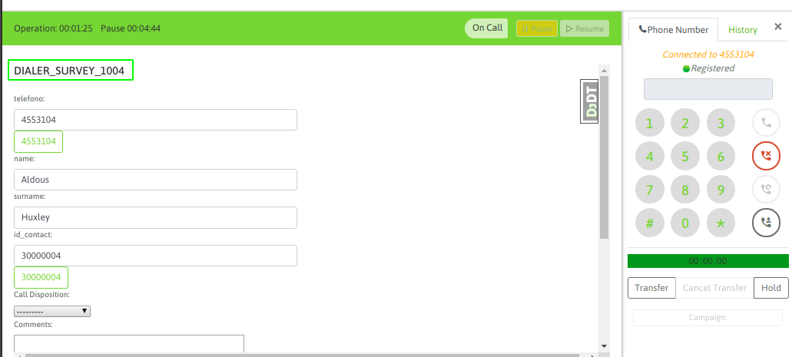

Agente en modo predictivo¶
Un agente online y asignado a una campaña predictiva que se encuentre activa, puede comenzar a recibir llamadas del discador.
El ingreso de las llamadas se notifica con un audio tipo «beep» que se reproduce sobre el auricular del agente e inmediatamente se exponen los datos del contacto que el discador enlazó y el agente queda en comunicación con dicho contacto.
Figure 1: dialer call connect
NOTA 1: Es importante advertir de que un agente que trabaja sobre una campaña predictiva, debe estar muy alerta ya que generalmente el sistema se configura para que las llamadas de discador predictivo ingresen directamente al agente, sin brindar la posibilidad de elegir ser atendidas o no.
Como se puede visualizar en la figura 1, además de la reproducción del audio de notificación, el agente se puede percatar del cambio en la pantalla. Por un lado la barra de estado se pinta de verde en el estado de «On call» y además se notifica el nombre de la campaña a la que corresponde la llamada.
Una vez que la llamada finaliza (independientemente de qué lado corte la llamada), el sistema fuerza al Agente a ingresar a una pausa del tipo ACW (After Call Work), que permite al agente terminar de gestionar el contacto con su respectiva calificación, para luego volver a quedar disponible en el estado de Connected, de manera tal que el discador lo visualice como un agente activo al cual enviarle llamadas.
NOTA 2: La salida del estado de pausa ACW puede darse induciendo al agente a que salga el mismo de la pausa o bien después de un periodo de tiempo (en segundos) definido por el administrador, en este último caso, el agente simplemente cuenta con ese periodo de tiempo de gracia para calificar el contacto y luego automñaticamente es puesto nuevamente en estado de disponible para otra llamada, de manera automática.
Como realizar una llamada manual¶
Surgen casos en los que el agente asignado a una campaña predictiva debe marcar a un número manualmente, en este caso se sugiere al agente ingresar en modo pausa y luego desde dicho estado, generar la llamada saliente. Ya que de lo contrario puede suceder que al momento de estar marcando el número, el discador le envíe una llamada predictiva y corte al medio la acción de la llamada manual al agente.
La llamada manual citada puede ser a otro de los números del contacto o bien a un número externo a la base. Lo importante es recordar ir a pausa a la hora del intento de contactación manual al teléfono.